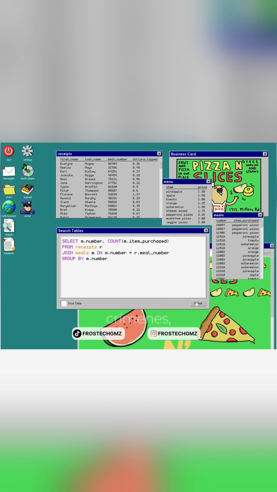

workflow_multiplier
Benchmark Your Brain — the skill-optimizer loop, pointed at the human
The agent world now rewrites skills against benchmarks: SkillOpt rejects any edit that doesn't beat the eval, Karpathy-style autoresearch adds an outer coach loop, and skills log their own failures for batch rewrites. Meanwhile the catalog's learning entries stop at 'turn saves into quizzes'. Run the same loop on yourself. Your saves are the training set, auto-generated quizzes are the eval set, and an outer coach rewrites your study playbook whenever your scores plateau.
Anthropic · Anthropic Economic Index · ChatGPT · Claude · Database Detective · Grokbot · NotebookLM · O*NET · OpenAI · SkillOpt
Try It — Action Sketch
Export the last 60 days of saves (DejaViewed parquet works) into a table; a weekly Claude skill clusters them into 3 topics and writes 15 retrieval questions each, held out from the study notes., Quiz yourself cold, log scores per topic; the coach skill rewrites the study playbook (spacing, format: explain-back, build-a-thing, game) only if next week's held-out score beats the last., Add chat-history mining monthly: questions you re-asked the AI become forced quiz items., Falsifier: if held-out scores after 6 weeks are no better than a no-coach control topic studied with plain flashcards, the outer loop adds overhead not learning.
Prerequisites: A saves export (this catalog qualifies), Claude/agent with scheduled skills, ~20 min/week of honest self-quizzing
Connected Posts (9)
Self-study pipeline — saved links to AI-generated study guides and quizzes
Save videos and articles via Chrome extensions or text into a table, then give your agent a skill that groups recent saves by topic and generates study guides and quizzes, optionally through NotebookLM. Active recall instead of passive watching.

Microsoft SkillOpt — agent skills that rewrite themselves against benchmarks
Microsoft open-sourced SkillOpt: a base model runs a task, an optimizer rewrites the skill instructions from results, successful paths are separated from failures, and edits that don't beat the benchmark are auto-rejected. Claimed to beat hand-written prompts and TextGrad and to transfer across models.

Bilevel autoresearch loops — an outer coach loop rewrites the search
Builds on Karpathy's autoresearch loop (try change, test, keep or revert). An outer coach loop watches the inner worker and rewrites its search playbook so it stops repeating the same ideas; claimed ~5x better on Karpathy's benchmark with the same models.

Self-improving skills vs AI teammates — log issues, rewrite skills
Argues personified 'AI teammates' are static while skills are adaptable: keep every skill in a database table, have each skill log issues about itself when used into a second table, then periodically run a prompt that reads the accumulated issues and rewrites the skill. Specific workflows with clear end states beat persona prompts.

Chat-history mining — derive better custom instructions from your AI logs
Export your full ChatGPT or Claude history, have a small model like Jev tag every conversation for mistakes and usage patterns, then feed the analysis to your main assistant to write new custom instructions. A cheaper alternative to building a full personal 'Jarvis' agent.

Anthropic job index audit — map your tasks to automation vs augmentation
Download Anthropic's job index, combine it with the US Labor Department's O*NET task database for your role, and have an AI split your tasks by Anthropic's automation-versus-augmentation ratio. A second prompt builds a 90-day plan to automate the automatable parts and get excellent at the rest.

Database Detective — solve crimes by writing SQL queries
Database Detective is a Steam game where you solve absurd police cases by querying tables with SELECT, WHERE and JOIN to rule out suspects. Beginner-friendly with a manual, clear errors and a hint assistant, and it trains asking the right data question first. English only.
Glenn Gould's humming — thinking music away from the piano
Glenn Gould hummed audibly on nearly every recording despite Columbia engineers' mic tricks. He traced it to practising under a vacuum cleaner's noise, which taught him to hear pieces internally and learn away from the instrument; the voice is the overflow, audible on the Goldberg Variations.
5 ChatGPT learning prompts — 80/20, intern mode, skill plan
@yourchatgptguide's list of 5 stock prompts: Pareto learning, report-writing intern, 30-day skill plan, summarize-to-bullets, self-prompt generator. Decent template bank for study/research workflows.
Deeper Dive generated 2026-10-21T18:20:58.220220 · Curated by Claude for Gabe (@6ab3) · dejaviewed.com